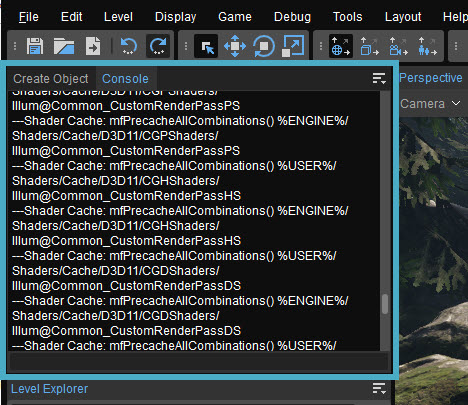
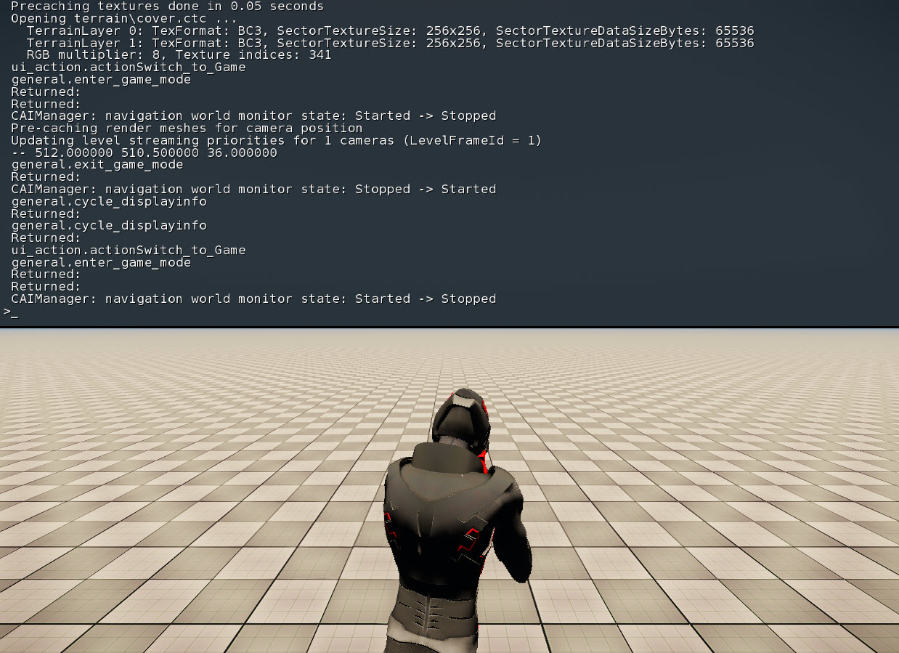
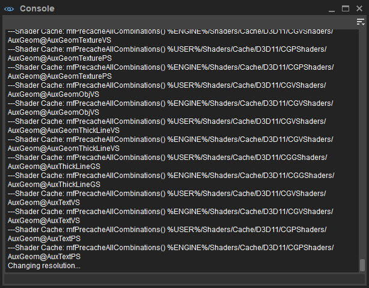
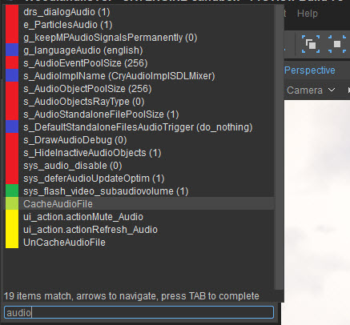
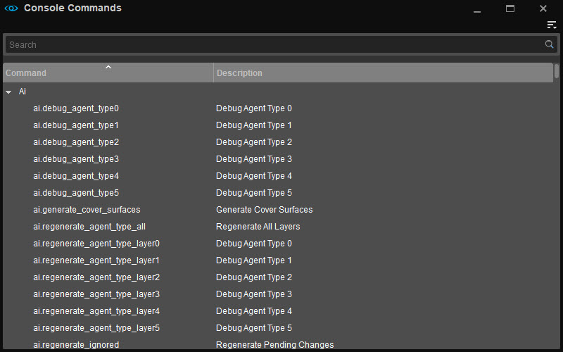
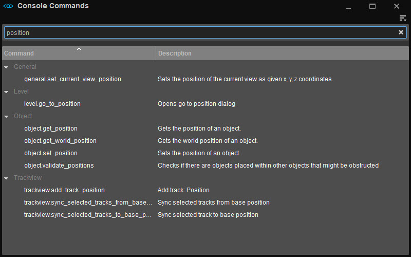
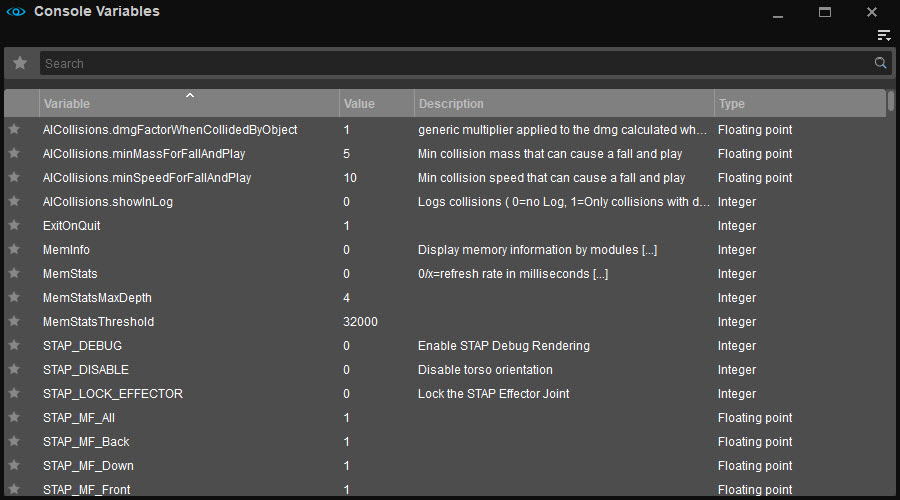
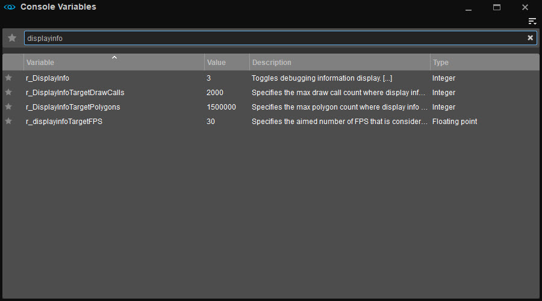

Обзор
Консоль — это редактор командной строки, обеспечивающий доступ ко многим расширенным функциям редактора Sandbox, включая различные режимы отладки и тестирования.
По умолчанию он расположен в верхнем левом углу UI, на вкладке рядом с инструментом «Создать объект»:

Его также можно открыть, зайдя в Инструменты → Дополнительно → Консоль.
В игровом режиме (Ctrl+Г), Консоль можно открыть, нажав клавишу тильда (~ на большинстве клавиатур обычно расположен в верхнем левом углу клавиатуры.):

Окно консоли в редакторе Sandbox используется для ввода консольных команд и консольных переменных (CVars). Он рассматривается как любой другой инструмент и поэтому может быть закреплен в любом месте пользовательского интерфейса.
Меню
Доступ к меню возможен через 
Файл
| Вариант | Описание |
|---|---|
| Сохранить | Экспортирует файл журнала консоли в указанную папку. |
Редактировать
| Вариант | Описание |
|---|---|
| Очистить | Очищает окно вывода консоли. |
| Найти... | Открывает панель поиска для поиска в окне вывода консоли. |
| Найти предыдущее | Находит предыдущее вхождение вашего поиска. |
| Найти следующий | Находит следующее вхождение вашего поиска. |
Панели инструментов
Вариант | Описание | ||||
|---|---|---|---|---|---|
Настроить... | Открывает окно настройки панели инструментов, позволяющее пользователям настраивать существующие панели инструментов и/или создавать новые панели инструментов в рамках этого инструмента. | ||||
Блокировка панелей инструментов | Если этот параметр отключен, положения панелей инструментов и разделителей внутри этого инструмента можно изменить путем перетаскивания. | ||||
Проставки | Следующие параметры позволяют пользователям использовать разделители при позиционировании панелей инструментов.
Проставки Опции меню доступны только тогда, когда Панели инструментов → Заблокировать панели инструментов отключен. | ||||
| Панели инструментов | Перечисляет все стандартные и пользовательские панели инструментов (если таковые имеются), созданные для этого инструмента, что позволяет пользователям выбирать, какую панель инструментов они хотят скрыть или отобразить. |
Если у инструмента есть панель инструментов, будь то панель по умолчанию или пользовательская, приведенные выше параметры также доступны при щелчке правой кнопкой мыши в области панели инструментов (только если панель инструментов уже отображается).
Помощь
| Вариант | Описание |
|---|---|
| Перейти к документации... | Открывает страницу документации для этого инструмента. |
| Консольные команды | Открывает список консольных команд. |
| Консольные переменные | Открывает список CVar. |
Командная строка и окно вывода
В нижней части консоли вы найдете командную строку, в которой вы можете вводить консольные команды и консольные переменные (CVars).

Например, довольно часто используемая консольная переменная: r_DisplayInfo, которым могут быть присвоены различные целые числа. Например, значение «1» означает, что некоторая основная информация о профилировании, такая как текущее количество кадров в секунду, отображается в правом верхнем углу области просмотра. Значение «0» отключает отображение этой информации, а значение «2» будет использовать другой режим отображения с немного другой информацией.
Использование консоли
Использовать консоль очень просто: вы вводите команду или CVar в командной строке, нажимаете Войти и оно будет исполнено.
В консоль встроена собственная функция поиска, поэтому вам не обязательно открывать экраны консольных команд и консольных переменных, упомянутые выше.
Вы можете просто начать вводить часть консольной команды или CVar в командную строку, и в окне «Результаты поиска» вы увидите список результатов поиска с цветовой кодировкой:

Затем вы можете пролистать этот список результатов поиска, прокручивая его с помощью колесо мыши или с Вверх и Вниз стрелки. Удар Войти или щелкните консольную команду или CVar по вашему выбору, чтобы выбрать ее и отобразить в командной строке. Все, что вам нужно сделать, это ввести значение и нажать Войти еще раз, чтобы выполнить его.
Более подробную информацию см. Использование консоли и конфигурации документ.
Консольные команды и поиск CVar в Windows
В редакторе Sandbox также есть отдельные окна для поиска консольных команд, которые также содержат описание того, что они делают. Это особенно полезно для менее продвинутых пользователей.
Консольные команды
Полный список консольных команд можно найти на странице Справка -> Консольные команды. Откроется следующее окно:

Это довольно простое окно поиска для всех существующих консольных команд в редакторе Sandbox.
Панель поиска
В строке поиска вверху вы можете ввести все, что хотите найти, и любая команда с введенным вами текстом в ее названии будет отображаться в окне результатов поиска ниже.
Окно результатов поиска
В этом окне рБудут отображены результаты поиска, которые вы ввели в строку поиска. Например, поиск по запросу «позиция» приведет к появлению нескольких команд, включая текст «позиция»:

В столбце «Описание» будет отображено описание команды.
Консольные переменные
Полный список переменных консоли см. ты можешь пойти в Справка -> Переменные консоли. Откроется следующее окно:

Это окно поиска похоже на окно консольных команд, но оно специально разработано для консольных переменных.
Панель поиска
В строке поиска вверху вы можете ввести все, что хотите найти, и любой CVar с введенным вами текстом в его названии будет отображаться в окне результатов поиска ниже.
Окно результатов поиска
В этом окне будут отображаться результаты поиска, которые вы ввели в строку поиска. Например, поиск часто используемого «displayinfo» приведет к появлению нескольких CVar, включающих текст «displayinfo»:

В этом окне результатов поиска есть 4 столбца:
| Столбец | Описание |
|---|---|
| Переменная | Показывает имя переменной консоли. |
| Значение | Показывает значение CVar на вашем уровне на момент поиска. Двойной щелчок по этому значению позволит вам изменить его сразу, без необходимости возвращаться в саму консоль. Нажмите Enter, чтобы подтвердить изменение, и оно будет реализовано. |
| Описание | Дает описание того, что делает CVar, включая все возможные значения. |
| Тип | Показывает тип CVar. |
Импорт и экспорт CVar
Также есть две кнопки для импорта и экспорта CVar на случай, если вы захотите сохранить их в виде файла *.json.